Zhizhuo Yin1 , Yuk Hang Tsui2 , Pan Hui1,2
1Hong Kong University of Science and Technology (Guangzhou) Guangzhou, Guangdong, China
2Hong Kong University of Science and Technology, Hong Kong SAR
zyin190@connect.hkust-gz.edu.cn, yhtsui@connect.ust.hk, panhui@hkust-gz.edu.cn
Abstract
Generating full-body human gestures encompassing face, body, hands, and global movements from audio is crucial yet challenging for virtual avatar creation. Existing systems tokenize gestures with fixed frame-count for each token, predicting tokens of single scale from the input audio. However, expressive human gestures consist of varied patterns with different frame lengths, and different body parts exhibit motion patterns of varying durations. Existing systems fail to capture motion patterns across body parts and temporal scales due to the fixed frame-count setting of their gesture tokens. Inspired by the success of the feature pyramid technique in the multi-scale visual information extraction, we propose a novel framework named PyraMotion and an adaptive multi-scale feature capturing model called Attentive Pyramidal VQ-VAE (APVQ-VAE). Objective and subjective experiments demonstrate that the PyraMotion outperforms state-of-the-art methods in terms of generating natural and expressive full-body human gestures. Extensive ablation experiments highlight that the self-adaptiveness integration through attention maps contributes to performance.
1 Introduction
Among all human communication, the movements of all body gestures serve as an important approach to conveying thoughts. Such non-verbal signals provide more information than voice and context, enhancing the expressiveness and vividness of the speech, thus allowing listeners to gain a more comprehensive understanding of the intentions, emotions, and motivations of the speaker [32, 28]. Existing studies [35, 11] suggest that expressive gestures make avatars more intimate and trustworthy. In the metaverse [17], the naturalness of the avatar's full-body gestures, such as face micro-expressions, intricate body gestures, and movement trajectory, could impact the sense of realism, presence, and satisfaction. Therefore, generating natural full-body gestures is a valuable and challenging task that serves as a critical component for creating realistic digital humans [29, 42].
The most recent co-speech gesture generation work [22, 1, 39] focuses on utilizing VQ-VAE [34], a method that encodes continuous motion to a discrete latent space while preserving the original motion information. However, in these VQ-VAE-based methods, one shared approach is that each motion token exclusively represents a static human pose in a single scale with fixed frame count. Since natural gestures convey semantic information through a series of motion patterns with varying durations, shown in Figure 1, this assumption severely hampers the model's ability to learn natural gestures that express different intricate semantic information. This assumption also constrains the ability of the token predictor model to capture expressive patterns of audio and transcript representations with inconsistent durations and generate accurate corresponding motion tokens.
Inspired by a widespread pyramidal multiscale design exploited in computer vision [31, 20, 26]. We propose the PyraMotion framework to address the above problem by adaptively capturing motion patterns from coarse to fine granularities. Experiments validate that PyraMotion outperforms existing state-of-the-art studies on reconstructing smooth body gestures from audio and textual information.

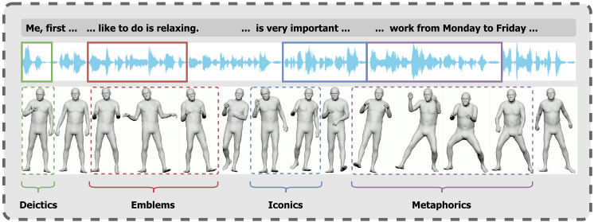
One of the key components of PyraMotion, the Attentional Pyramidal VQ-VAE (APVQ-VAE) model encodes the motion patterns of different body parts at different scales into a shared discrete latent space as several series of motion tokens and reconstructs a motion sequence by attentively fusing these motion tokens. Experiments also demonstrate that APVQ-VAE outperforms the traditional VQ-VAE in gesture reconstruction, beat alignment, and diversity. Additionally, the attention maps reveal that different body parts exhibit distinct attention patterns to tokens across varying time durations, highlighting the necessity to introduce a pyramidal motion representation.
To summarize, the main contributions are as follows:
· This work introduces a novel framework called the PyraMotion, which generates dynamic and natural full-body gestures using multi-modal information. To the best of our knowledge, this paper is the first to propose encoding motion patterns with varying temporal scale into a shared discrete latent space as motion pattern tokens.
· This work proposes the Attentional Pyramidal VQ-VAE (APVQ-VAE), a novel model designed to tokenize motion patterns across multiple temporal scales using a shared codebook. Experiments validate the superiority of APVQ-VAE compared with vanilla VQ-VAE in capturing motion patterns at different temporal scales and effectively accommodating the diverse motion information needs of various body parts during generation.
· Extensive experiments show that Pyramotion outperforms state-of-the-art methods in generating audio-driven gestures, as confirmed by both objective evaluations and subjective human studies.
2 RelatedWorks
2.1 Human 3DMotion Generation Approaches
Early attempts at generating human gestures involved using rule-based algorithms [4, 15] to select appropriate gestures from a database based on input and blend motion clips with smooth algorithms. However, due to limited data and varying speech details, such a workflow suffers from inconsistency between the audio and motion, and the unnatural transition among different motion clips.
Deep generative models, such as Variational Autoencoders (VAEs) [16], Generative Adversarial Networks (GANs) [13], and transformers [36, 9], have shown promise in addressing the limitations of rule-based methods by capturing complex data correlations in a shared vector space. However, direct generation from a continuous latent space is sensitive to input noise, presenting challenges in practical applications. VAE-based methods also face the problem of "posterior collapse," restricting their ability to generate diverse gestures based on audio cues. These pose challenges for practical implementation in real-world scenarios.
Recent work [39, 30, 1, 22] has utilized VQ-VAE [34] to project motion patterns to a discrete latent codebook, transforming the motion generation problem into an autoregressive token prediction task conditioned on audio. These methods utilize VQ-VAE to capture motion patterns in single scale with fixed frame count and project them into a discrete latent space, represented by motion tokens.
Then, they utilize a token predictor network to transform the audio and text representations into the motion token series and reconstruct human motion of each frame by applying the decoder of VQ-VAE. While the VQ-VAE enhances model robustness and generation quality, the assumption that each token represents poses of gestures in a single scale limits the generation of expressive motions varying in frame counts.
To address the gap, this paper introduces a variation of VQ-VAE called Attentional Pyramidal VQVAE (APVQ-VAE) to tokenize dynamic motions in different temporal scales, enabling the generation of more detailed and natural gesture sequences.
2.2 Audio-driven Full-body Gesture Generation
Given the complexity and variability of human motions, recent research has focused on generating gestures for specific parts of the body, such as the face [10, 37], upper body (including arms, wrists, and hands) [41, 12], and lower body (including overall movements) [38] individually. While these generative models have shown promise in capturing unique motion patterns, they lack the versatility to generate movements across all body parts due to the diverse range of motion patterns among different body parts. There is a need for a unified framework for motion modeling.
Recent studies [22, 25, 6] approached generating full-body gestures by generating each part, the face, upper body, hands, lower body, and global movements first and combining these components to form full-body gestures.
However, existing methods overlook the need for different temporal information in modeling and generating motions, which lack the ability to capture motion patterns in different temporal scales and extract semantic correlations between different body parts.
In this work, we utilize the Attentional Pyramidal Token predictor to extract the coarse-to-fine-grained pattern information within the audio and transcript embeddings. It can accurately predict the motion token series by exploiting both body part information and semantic correlations between different body parts through a multi-scale temporal cross-attentive network.
3 Methodology

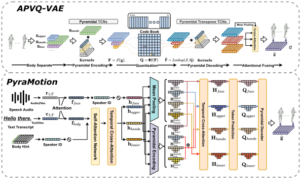
This section presents the development of the PyraMotion framework, as depicted in Figure 2. Initially, we formally define the problem of audio-driven gesture generation. Subsequently, we outline the workflow of the PyraMotion framework and delve into the structures of Attentional Pyramidal VQ-VAE and Pyramidal Token Predictor.
3.1 ProblemFormulation
For a given audio a ∈ RL·sf , sf = sraudio/fpsgestures, where L represents the expected total frame counts of generated gesture sequences, sf represents the sample count per frame, sraudio denotes the sample rate of the given audio, and fpsgestures denotes the frames per second of the generate gesture sequences. The task is to generate the holistic 3D gesture of the human body g ∈ RL×(55×6+100+4+3) from the given audio. The dimension of g is formed by L multiplied by the sum of 55 joints in Rot6D, 100 dimensions of facial expressions in FLAME parameters, 4 foot contact labels, and 3 global translation parameters.
3.2 PyraMotion
The overall workflow of PyraMotion can be divided into two stages: 1. Training APVQ-VAE to learn discrete latent representations of motions for encoding and reconstruction. 2. Training the Pyramidal Token Predictor to predict the discrete latent representations from audio.
In the first stage, motion representations are tokenized at various scales using multiple Temporal Convolution Networks (TCNs). These tokens are mapped to a shared codebook for semantic alignment, then reconstructed to original motions by applying Transpose TCN and aggregation.
In the second stage, the goal is to predict token series from input audio and text transcripts to reconstruct corresponding motion sequences. To account for the diverse motion patterns across different body parts, the audio and text representations are transformed into four separate latent embeddings for reconstructing the face, upper body, hands, and lower body. The four latent embeddings are further processed and quantized into token series of varying temporal scale, then decoded by the attentional pyramidal decoder in the trained APVQ-VAE to reconstruct the motion sequences.
3.3 Attentional Pyramidal VQ-VAE (APVQ-VAE)
Normal VQ-VAE consists of Encoder E, Quantizer Q, and Decoder D. The Encoder projects the raw gesture sequences (g) into the latent representation space as encoded embeddings f in single scale with fixed frame count, and then the Quantizer classifies the embeddings into discrete tokens q according to the codebook Z based on the embedding distance in the latent space. After that, the decoder reconstructs the motion sequences ˆ g from the quantized embedding ˆf , which is generated by looking up the codebook with quantized token series.

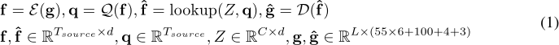
where Tsource, d, and C are the total frame count of the input motion sequence, the dimensions of embeddings, and the size of the codebook, respectively.
In APVQ-VAE, we utilize n TCN networks representing n levels of temporal scale to generate the encoded embedding F, which consists of n embedding series with various lengths.

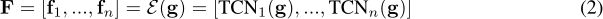
where fi ∈ R(Tsource/2i )×d denotes the embedding series with i from 1 to n.
In the quantization stage, the encoded embeddings are first quantized to token series Q, then formed the quantized embedding series ˆF by looking up the codebook. All embedding series share the same codebook Z to ensure consistency in the embedding semantics.

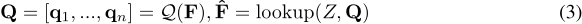
where qi ∈ RTsource/2i denotes the token series.
In the decoding stage, instead of using TCN as previous VQ-VAE-based methods [22, 1], we utilize the Transpose Temporal Convolution Network (TransTCN) to decode the quantized embeddings into gesture sequences using the same scale of reception field in the encoder. Thus, multiple gesture sequences are reconstructed from quantized embeddings in different temporal scales. To further enhance the reconstruction, as shown in Eq. 4, a residual connection is introduced by combining the direct reconstruction from the mean of the stacked gesture sequences with the attention-based residue, enabling the model to capture both coarse and fine-grained temporal dynamics effectively. Further details on this design and its effectiveness are discussed in section 4.5.

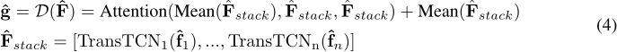
Notably, for each convolution operation in TCNs and TranTCNs, the output embeddings are normalized by dividing the kernel size shown in Eq. 5 to mitigate the scale differences stemming from varying kernel sizes, thereby enhancing the stability of the training process.

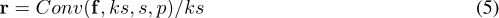
where Conv() denotes convolutional operation, ks denotes kernel size, s denotes stride, and p denotes padding. The loss function of APVQ-VAE is as follows:

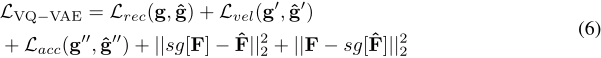
where Lrec is Geodesic [33] loss, and Lvel, Lacc are L1 losses. sg is the stop gradient operation and the weight of commitment [34] loss is set to 1.
3.4 Pyramidal Token Predictor
In the Pyramidal Token Predictor, we need to predict the corresponding pyramidal tokens series ˆQ = [ˆq1, ..., ˆqn] from audio features and text contents.
Audio and Context Feature Fusion For the input audio features s, following previous work [2], we employ onset o, and amplitude a and combine them as rhythmic audio features r ∈ RT×d . For the input transcript text, we transform it into content features c ∈ RT×d using the pre-trained model [3]. Then we utilize the attention mechanism to fuse the audio features and context features,

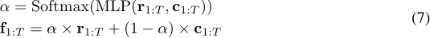
where T denotes the total frame counts of the audio after sampling and the expected motion sequences. α ∈ RT×d is the element-wise attention coefficient.
Latent Generation and Token Prediction According to the previous studies [22], in the holistic gesture generation task, there is only a weak correlation between the distribution of facial expression and body motion. Therefore, we propose to exploit two independent feature extraction and token prediction workflows for facial expression and body motion separately, based on independent audiotext representations f face and f body . For the latent representation prediction, we first combine the audio-text embedding with the learned speaker embedding and project to the dimension of the hidden vector:

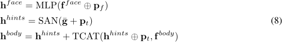
hparts ∈ RT×h denotes the hidden representation of part motion, where parts can be face or body. f parts ∈ RT×d denotes the fused audio-text embedding, and pf ∈ Rd denotes the learned speaker embedding. Body hints hhints ∈ RT×h are encoded from the masked gesture sequence ¯ g, where the first 8 frames are ground truth frames. SAN denotes a self-attentive network.
To better capture the various motion patterns of different parts of the body, the hidden representation of the body is further projected into three different latent spaces, including the upper body, lower body, and hands. Then, we construct two types of pyramidal representations to generate pyramidal latent. The first type averages the consecutive representation and the second type uses the isomorphic TCN network in the APVQ-VAE encoder. The TCN network can extract similar information as the APVQ-VAE encoder and generate pyramidal motion latent.

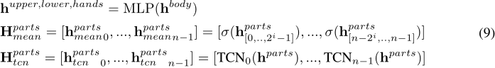
where parts can be face, upper, lower, and hands. σ denotes the average operation and hparts meani , hparts tcn i ∈ RT/2i×h denotes the ith embedding series with 2i frames.
After constructing the embedding series with different scale, a temporal cross-attention Transformer decoder TCAT is applied to capture the correlations between the above two representations. Then a 1-layer MLP is used to project the dimensions into the reconstruction latent ˆHparts rec .

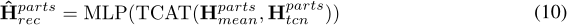
We optimize the learned reconstruction latent by applying the MSE loss:

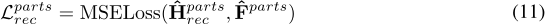
where ˆFparts is the learned latent representation of APVQ-VAE of corresponding body parts from the ground truth. After learning the mutual information between the two representations, we further learned the correlation among body parts. We sum the TCN latent series of all body parts together to form a full-body pyramidal latent and conduct cross-attention operations with the mean latent:

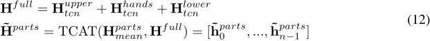
where ˜Hparts denotes the latent embedding of each part of the body in different temporal scale and parts can be upper, lower, and hands according to previous body part separation. hparts i ∈ RT/2i×h represents the latent embedding of body parts in different scales.
After generating the latent representations of each body part, we quantize the latent representations by predicting the corresponding tokens iteratively from coarse to fine granularity. Such quantization operation projects the learned continuous latent to discrete latent space represented by tokens for better reconstruction performance.

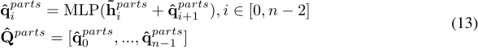
where ˆqparts i ∈ RT/2i×C represents the predicted possibility distribution of motion tokens for ith granularity, C denotes the codebook size. We use cross-entropy loss to optimize the learned token index distribution, where Qparts is the learned token of body motion in APVQ-VAE.

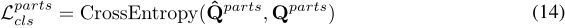
4 Experiments
4.1 Datasets and Training
We evaluate the ability of our method to generate holistic 3D gestures from speech on a diverse and expressive dataset BEAT2 1 [23] collected from mocap equipment. This public dataset contains 76 hours of high-quality, multi-modal data captured from 30 speakers talking with eight different emotions. Following the settings of existing work [22, 25], we conduct the experiments on the BEAT2-Standard Speaker2 with an 85%/7.5%/7.5% train/val/test split.
4.2 EvaluationMetrics
For the body motion generation, we adopt FGD [41] to measure the similarity between the generated gesture and the real gestures. To evaluate the Diversity [18] of generated gestures, we calculate the L1 distance between different gesture clips. In terms of audio-motion synchronization, we utilize the Beat Align [19] measurement. For the facial expression generation, we use Mean Square Error (MSE) [37] to measure the vertex position distance and L1 Vertex Difference (LVD) [37] to measure the L1 distance between the generated facial expression and the ground truth facial expression. The results are reported as the mean value and the standard deviation computed from 5 times of independent runs. The significance is also reported with the p-value.
1 https://github.com/PantoMatrix/PantoMatrix
4.3 ComparisonMethods
We compare our PyraMotion 2 with the following classic and state-of-the-art methods of talking head generation and body gesture generation: S2G [12], Trimodal [41], HA2G [24], DisCo [21], CaMN [23], Diffusestylegesture [38], HoloGest [7],RAG-Gesture [27], AMUSE [8], MambaTalk [43], Habibie et al [14],TalkSHOW [40], DiffSHEG [6], EMAGE [22], and ProbTalk [25], SynTalker [5]. For Habibie et al. [14], TalkSHOW [40], we use their reported version, which is the upper body generation. Meanwhile, we cite the results of their full-body version reproduced by [22].
4.4 Overall Comparison
In this part, we compare the overall performances of M3G with classical and state-of-the-art audiodriven gesture generation methods. In Table 1, Habibie et al‡ and TalkSHOW‡ denotes the reported performance of reproduced full-body motion generation in [22], ∗ denotes the results are directly adapted from their original paper due to the same experimental settings, thus no std values are reported. AMUSE† denotes the reported performance is by the reproduced evaluation code by ourselves.

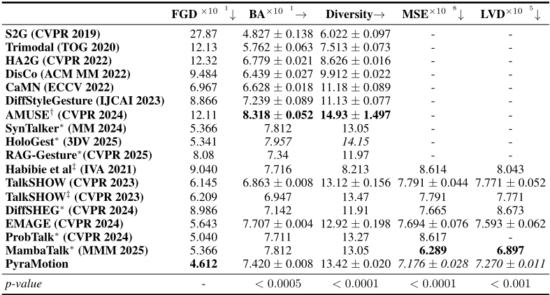
Recognized table text (check against the image)
| FGD ×10-1 | ↓ | BA×10-1→ | Diversity→ | MSE×10-8 | ↓ | LVD×10-5 | ↓ | |
|---|---|---|---|---|---|---|---|---|
| S2G (CVPR 2019) | 27.87 | 4.827 ± 0.138 | 6.022 ± 0.097 | - | - | |||
| Trimodal (TOG 2020) | 12.13 | 5.762 ± 0.063 | 7.513 ± 0.073 | - | - | |||
| HA2G (CVPR 2022) | 12.32 | 6.779 ± 0.021 | 8.626 ± 0.016 | - | - | |||
| DisCo (ACM MM 2022) | 9.484 | 6.439 ± 0.027 | 9.912 ± 0.022 | - | - | |||
| CaMN (ECCV 2022) | 6.967 | 6.628 ± 0.018 | 11.18 ± 0.089 | - | - | |||
| DiffStyleGesture (IJCAI 2023) | 8.866 | 7.239 ± 0.089 | 11.13 ± 0.077 | - | - | |||
| AMUSE† (CVPR 2024) | 12.11 | 8.318 ± 0.052 | 14.93 ± 1.497 | - | - | |||
| SynTalker∗ (MM2024) | 5.366 | 7.812 | 13.05 | - | - | |||
| HoloGest∗ (3DV 2025) | 5.341 | 7.957 | 14.15 | - | - | |||
| RAG-Gesture∗ (CVPR 2025) | 8.08 | 7.34 | 11.97 | - | - | |||
| Habibie et al‡ (IVA 2021) | 9.040 | 7.716 | 8.213 | 8.614 | 8.043 | |||
| TalkSHOW (CVPR 2023) | 6.145 | 6.863 ± 0.008 | 13.12 ± 0.156 | 7.791 ± 0.044 | 7.771 ± | 0.052 | ||
| TalkSHOW‡ (CVPR 2023) | 6.209 | 6.947 | 13.47 | 7.791 | 7.771 | |||
| DiffSHEG∗ (CVPR 2024) | 8.986 | 7.142 | 11.91 | 7.665 | 8.673 | |||
| EMAGE (CVPR 2024) | 5.643 | 7.707 ± 0.004 | 12.92 ± 0.198 | 7.694 ± 0.076 | 7.593 ± | 0.062 | ||
| ProbTalk∗ (CVPR 2024) | 5.040 | 7.711 | 13.27 | 8.617 | - | |||
| MambaTalk∗ (MMM2025) | 5.366 | 7.812 | 13.05 | 6.289 | 6.897 | |||
| PyraMotion | 4.612 | 7.420 ± 0.008 | 13.42 ± 0.020 | 7.176 ± 0.028 | 7.270 ± 0.011 | |||
| p-value | - | < 0.0005 | < 0.0001 | < 0.0001 | < 0.001 |
Table 1: Overall Comparison of various methods. The best performance of each metric is in boldface fonts, and the second one is in font. The sign ↑ denotes that the larger the value, the better it is, while the sign ↓ is the reverse, →means the metrics measures some expressive aspects of the motion, while higher value is not necessarily correlated to the generation accuracy. The standard deviation is calculated across 10 epochs after reaching best performance.
As shown in Table 1, our proposed PyraMotion surpasses or achieves state-of-the-art methods across all metrics. Notably, it achieves significant improvements in reconstruction accuracy like FGD, MSE, and LVD, demonstrating that its generated full-body gestures align more closely with ground-truth motion than existing approaches. For non-deterministic metrics like Beat Align and Diversity, PyraMotion delivers comparable or suboptimal performance.
These results highlight that PyraMotion's use of Attentional Pyramidal VQ-VAE to adaptively capture multi-scale patterns across body parts enables it to model a broader range of motion patterns. This capability enhances the model's ability to generate higher-quality, more accurate motion sequences compared to other methods.
4.5 Ablation Analysis
Key components In this ablation experiment, we propose five variants of PyraMotion: w/o Separate Body uses unified latent embeddings for different body parts instead of separate latent representations. w/o Text generates motion sequences only based on the audio signal. w/o TCN Encoder discards the TCN network in equation (12) to disable the temporal information extracting process in the token predictor; w/o Full-Body Latent discards the fusing operation of full-body latent in equation (15) and generates each body part's latent embedding only based on their own parts' features; w/o TransTCN substitutes the TransTCN structure in equation (4) with the TCN structure in equation (2) following previous work [22, 1].
2 The source code will be released to GitHub after acceptance.
Table 2 reported that the PyraMotion significantly outperforms or performs similarly with all variants, demonstrating the contributions of these components. Moreover, the results indicate that replacing the TransTCN structure leads to a more significant decline in performance compared with the other two variants, demonstrating the indispensability of the token decoding process in the overall workflow. The absence of Full-Body latent mainly affects the body's reconstructing performance, which might be caused by the lack of mutual information among different body parts. The w/o TCN Encoder performs significantly worse than PyraMotion on facial reconstruction and body diversity, indicating the ability of the Pyramidal TCN Encoder to model diverse types of motion patterns and facial expressions from audio.

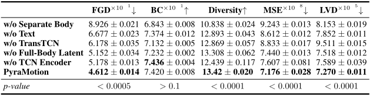
Recognized table text (check against the image)
| FGD×10-1 ↓ | BC×10-1 ↑ | Diversity↑ | MSE×10-8 ↓ | LVD×10-5 ↓ | |
|---|---|---|---|---|---|
| w/o Separate Body | 8.926 ± 0.021 | 6.843 ± 0.008 | 10.838 ± 0.024 | 9.243 ± 0.013 | 8.153 ± 0.019 |
| w/o Text | 6.677 ± 0.023 | 7.374 ± 0.012 | 12.893 ± 0.043 | 8.612 ± 0.012 | 7.852 ± 0.011 |
| w/o TransTCN | 6.178 ± 0.035 | 7.132 ± 0.005 | 12.869 ± 0.057 | 8.833 ± 0.017 | 9.511 ± 0.015 |
| w/o Full-Body Latent | 5.152 ± 0.034 | 7.232 ± 0.002 | 13.308 ± 0.062 | 7.440 ± 0.013 | 7.518 ± 0.012 |
| w/o TCN Encoder | 5.178 ± 0.013 | 7.436 ± 0.004 | 12.439 ± 0.117 | 7.607 ± 0.081 | 7.589 ± 0.039 |
| PyraMotion | 4.612 ± 0.014 | 7.420 ± 0.008 | 13.42 ± 0.020 | 7.176 ± 0.028 | 7.270 ± 0.011 |
| p-value | < 0.0005 | > 0.1 | < 0.0001 | < 0.0001 | < 0.0001 |
Reconstruction Performance Comparison of APVQ-VAE This section evaluates the performance of APVQ-VAE in learning and reconstructing compared to the widely used VQ-VAE in existing methods. A variant of it called Mean Pyramidal VQ-VAE (MPVQ-VAE) is also introduced, which substitutes the attentional fusing operation on the pyramidal token series with an averaging operation.
Table 3 presents the joints' rotation Mean Square Error (JRMSE) for each body part compared to the ground truth sequences. The second part of the table shows the metrics used in Table 1 to assess the reconstruction performance based on the encoded tokens in APVQ-VAE.

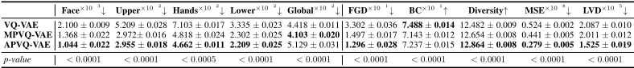
Recognized table text (check against the image)
| Face×10-3 ↓ | Upper×10-2 ↓ | Hands×10-2 ↓ | Lower×10-2 ↓ | Global×10-2 ↓ | FGD×10-1 ↓ | BC×10-1 ↑ | Diversity↑ | MSE×10-8 ↓ | LVD×10-5 ↓ | |
|---|---|---|---|---|---|---|---|---|---|---|
| VQ-VAE MPVQ-VAE | 2.100 ± 0.009 1.368 ± 0.022 1.044 ± 0.022 | 5.209 ± 0.028 2.972± 0.016 2.955 ± 0.018 | 7.103 ± 0.017 4.818 ± 0.024 4.662 ± 0.011 | 3.335 ± 0.023 2.302 ± 0.025 2.209 ± 0.025 | 4.418 ± 0.011 4.103 ± 0.020 5.129 ± 0.031 | 3.302 ± 0.036 1.497 ± 0.017 1.296 ± 0.028 | 7.488 ± 0.014 7.143 ± 0.012 7.237 ± 0.015 | 12.482 ± 0.009 12.654 ± 0.008 12.864 ± 0.008 | 0.524 ± 0.002 0.441 ± 0.005 0.279 ± 0.005 | 2.087 ± 0.010 2.011 ± 0.012 1.525 ± 0.019 |
| p-value | < 0.0001 | < 0.0001 | < | < 0.0001 | < | 0.0001 | < 0.0001 | < 0.0001 | < 0.0001 | |
| APVQ-VAE | < 0.0005 | 0.0001 | 0.0001 | < |
The experimental results reveal that both our APVQ-VAE and its mean-fusing counterpart MPVQVAE significantly outperform conventional VQ-VAE in motion pattern tokenization and reconstruction, confirming the superiority of modeling through pyramidal token series.
Notably, APVQ-VAE surpasses the mean-fusing version, MPVQ-VAE, underscoring the importance of its attentional fusing operation across multiple scales. To interpret this mechanism, we visualize attention maps from the best epoch (lowest JRMSE) in Figure 3, revealing distinct scale preferences across body parts. The face predominantly utilizes fine-grained features (kernel size 1), likely due to continuous mouth motions. In contrast, the lower body balances attention between kernel sizes 2 and 8, corresponding to coarse leg dynamics. Meanwhile, hands and upper body exhibit decreasing preference from fine to coarse scales with attention weights ranging from 0.2 to 0.3, reflecting their need for both expressive details and structural motion patterns. These findings demonstrate that the attentional fusion mechanism in APVQ-VAE adaptively addresses the differential reliance on multi-scale features across distinct body regions.
Efficiency Analysis In this section, we will provide the theoretical analysis towards the computational complexity of the proposed workflow compared with vanilla VQ-VAE.
Theoretically, the computational complexity of our APVQ-VAE is:

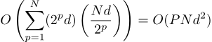

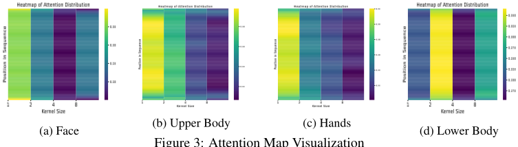
where d is the latent dimension, N is the total number of frames, and P is the number of pyramid layers. Thus, the time complexity of APVQ-VAE is a constant multiple of vanilla VQ-VAE.
For the PyraMotion model, before the pooling operation, the data processing steps are identical with single scale version. After the pooling operation described in equation Eq. 9, the time complexity in each step is in multi-scales, which follows the rule of a geometric series with regard to the increasing scale numbers. For the Temporal Cross-Attention (TCA) operation, the time complexity of its single-scale version is:

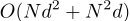
where N is the clip length and d is the hidden dimension. The multi-scale Temporal Cross-Attention operation has complexity:

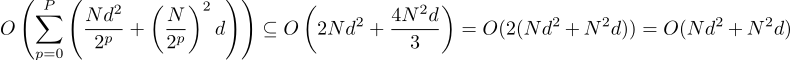
A similar conclusion will also be reached on the other multi-scale operations. Considering the total time complexity before the pooling operation, PyraMotion's time complexity has the same time-complexity level with less than 2× of the single-scale version. To validate these theoretical conclusions, we measured the inference times for single-scale EMAGE and multi-scale PyraMotion on over 5 minutes of motion data. The experimental results are shown in Table 4.

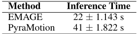
Recognized table text (check against the image)
| Method | Inference Time |
|---|---|
| EMAGE | 22 ± 1.143 s |
| PyraMotion | 41 ± 1.822 s |
Selection of Pyramid Layer Number This section evaluates the influence of pyramid layer design on motion reconstruction performance. Adhering to the feature pyramid framework [20], which leverages exponentially increasing kernel sizes to reduce information overlap across layers, we configure successive layers with the scale sequence [1, 2, 4, 8, 16]. To preserve information density and mitigate noise introduced by the padding operation, the pyramid layer downsamples features by a factor of 2, corresponding to the dilation of their kernel sizes shown in Figure 2.
In this experiment, we search for the optimal number of layers to balance computational efficiency with hierarchical feature extraction. The results, summarized in Table 5, show that increasing the layer number initially boosts performance but eventually leads to a decline. More layers enable PyraMotion with a higher capability to represent complex motion patterns with varying durations. However, overcomplex pyramidal token series may cause overfitting and the difficulty in predicting tokens from audio, resulting in a comparative reconstruction performance with far worse generation performance from audio, such as the 5 Layers variant.

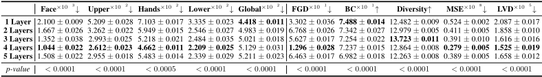
Recognized table text (check against the image)
| Face×10-3 ↓ | Upper×10-2 ↓ | Hands×10-2 ↓ | Lower×10-2 ↓ | Global×10-2 ↓ | FGD×10-1 | ↓ BC×10-1 ↑ | Diversity↑ | MSE×10-8 ↓ | LVD×10-5 ↓ | |
|---|---|---|---|---|---|---|---|---|---|---|
| 1 Layer | 2.100 ± 0.009 | 5.209 ± 0.028 | 7.103 ± 0.017 | 3.335 ± 0.023 | 4.418 ± 0.011 | 3.302 ± 0.036 | 7.488 ± 0.014 | 12.482 ± 0.009 | 0.524 ± 0.002 | 2.087 ± 0.017 |
| 2 Layers | 1.667 ± 0.026 | 3.262 ± 0.022 | 5.949 ± 0.015 | 2.546 ± 0.027 | 4.983 ± 0.019 | 6.768 ± 0.026 | 7.342 ± 0.027 | 12.979 ± 0.005 | 0.411 ± 0.005 | 1.858 ± 0.010 |
| 3 Layers | 1.352 ± 0.038 | 2.993± 0.025 | 5.218 ± 0.021 | 2.484 ± 0.035 | 5.021 ± 0.018 | 5.627 ± 0.017 | 7.254 ± 0.022 | 13.723 ± 0.011 | 0.391 ± 0.010 | 1.616 ± 0.016 |
| 4 Layers | 1.044 ± 0.022 | 2.612± 0.023 | 4.662 ± 0.011 | 2.209 ± 0.025 | 5.129 ± 0.031 | 1.296 ± 0.028 | 7.237 ± 0.015 | 12.864 ± 0.008 | 0.279 ± 0.005 | 1.525 ± 0.019 |
| 5 Layers | 1.508 ± 0.022 | 2.955 ± 0.018 | 5.483 ± 0.014 | 2.339 ± 0.029 | 5.211 ± 0.023 | 6.463 ± 0.017 | 6.982 ± 0.018 | 12.263 ± 0.008 | 0.389 ± 0.005 | 1.658 ± 0.012 |
| p-value | < 0.0001 | < 0.0001 | < 0.0005 | < 0.0001 | < 0.0001 | < 0.0001 | < 0.0001 | < 0.0001 | < 0.0001 | < 0.0001 |
5 Perceptual Study
To evaluate the naturalness of our generated results from the subjective perception, we conducted A/B testing following [40] by comparing the generated motions by PyraMotion with other methods, including CaMN, EMAGE, APVQ-VAE Reconstruction, and Ground Truth. For CaMN, since it does not generate the facial expression, we directly use the ground truth as its facial expression.
We randomly sampled 40 clips from the generated video and compared them pairwisely. Eighteen participants took part in this study. Specifically, participants are asked to answer A or B to the following questions: Which clip do you think is more natural?

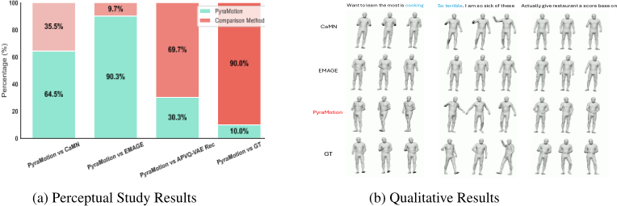
Figure 4a illustrates that participants favor PyraMotion over existing work CaMN, and EMAGE, indicating the superiority of PyraMotion in generating more natural motion from audio. Moreover, in a proportion of cases, PyraMotion outperforms the APVQ-VAE Reconstruction, which generates the motion from encoded tokens in APVQ-VAE, showing the closeness of generation quality between them. GT outperforms PyraMotion without a doubt, showcasing the space for improvements.
6 Limitation, FutureWork
The limitations of the proposed method are as follows: 1) It cannot adaptively adjust the number of pyramid layers towards different datasets. The number of pyramid layers is a hyperparameter in this work, which might restrict its generalizability and usability towards real-world usage scenarios. 2) One observation based on the existing work, EMAGE, and our work is that overly focusing on integrating the correlation among different body parts could potentially cause a decrease due to the interference of different body parts' motion distributions. While fully independent modeling of each body part would cause unnatural behavior. Thus, a self-adaptive mechanism of adjusting the ratio between these two perspectives would be potentially beneficial for future studies.
7 Conclusion
This study introduces an audio-driven holistic gesture synthesis framework named PyraMotion, a method that can extract pyramidal features from audio and exploit these features to generate natural and realistic holistic 3D gestures. To achieve this, we propose the APVQ-VAE, which encodes the pyramidal feature of multi-scale motion patterns into a shared codebook and adaptively fuses these features for different body parts. We validate the effectiveness of APVQ-VAE by comparing its reconstruction performance with vanilla VQ-VAE. We also illustrate the attention map of pyramidal features fusion in APVQ-VAE. It supports the observation of varying preferences of motion scales across body parts and interprets the source of adaptivity in APVQ-VAE. Extensive experiments demonstrate the superiority of the PyraMotion framework in generating more natural and realistic holistic 3D gestures compared with current state-of-the-art methods.
8 Acknowledgement
This work is supported by both the Bureau of Science and Technology of Nansha District, Guangzhou, Grant No.2022ZD012, and HSBC Project L0562.
References
[1] Tenglong Ao, Qingzhe Gao, Yuke Lou, Baoquan Chen, and Libin Liu. Rhythmic gesticulator: Rhythm-aware co-speech gesture synthesis with hierarchical neural embeddings. ACM Transactions on Graphics (TOG), 41(6):1-19, 2022.
[2] Tenglong Ao, Zeyi Zhang, and Libin Liu. Gesturediffuclip: Gesture diffusion model with clip latents. ACM Transactions on Graphics (TOG), 42(4):1-18, 2023.
[3] Piotr Bojanowski, Edouard Grave, Armand Joulin, and Tomas Mikolov. Enriching word vectors with subword information. Transactions of the association for computational linguistics, 5:135-146, 2017.
[4] Justine Cassell, Hannes Högni Vilhjálmsson, and Timothy Bickmore. Beat: the behavior expression animation toolkit. In Proceedings of the 28th annual conference on Computer graphics and interactive techniques, pages 477-486, 2001.
[5] Bohong Chen, Yumeng Li, Yao-Xiang Ding, Tianjia Shao, and Kun Zhou. Enabling synergistic full-body control in prompt-based co-speech motion generation. In Proceedings of the 32nd ACM International Conference on Multimedia, pages 6774-6783, 2024.
[6] Junming Chen, Yunfei Liu, Jianan Wang, Ailing Zeng, Yu Li, and Qifeng Chen. Diffsheg: A diffusion-based approach for real-time speech-driven holistic 3d expression and gesture generation. In Proceedings of the IEEE/CVF Conference on Computer Vision and Pattern Recognition, pages 7352-7361, 2024.
[7] Yongkang Cheng and Shaoli Huang. Holegest: Decoupled diffusion and motion priors for generating holisticly expressive co-speech gestures. In International Conference on 3D Vision 2025.
[8] Kiran Chhatre, Radek Danˇeˇcek, Nikos Athanasiou, Giorgio Becherini, Christopher Peters, Michael J. Black, and Timo Bolkart. Emotional speech-driven 3d body animation via disentangled latent diffusion, 2024.
[9] Mostafa Dehghani, Stephan Gouws, Oriol Vinyals, Jakob Uszkoreit, and Łukasz Kaiser. Universal transformers. arXiv preprint arXiv:1807.03819, 2018.
[10] Yingruo Fan, Zhaojiang Lin, Jun Saito, Wenping Wang, and Taku Komura. Faceformer: Speechdriven 3d facial animation with transformers. In Proceedings of the IEEE/CVF Conference on Computer Vision and Pattern Recognition, pages 18770-18780, 2022.
[11] Andrew Feng, Gale Lucas, Stacy Marsella, Evan Suma, Chung-Cheng Chiu, Dan Casas, and Ari Shapiro. Acting the part: the role of gesture on avatar identity. In Proceedings of the 7th International Conference on Motion in Games, MIG '14, page 49-54, New York, NY, USA, 2014. Association for Computing Machinery.
[12] Shiry Ginosar, Amir Bar, Gefen Kohavi, Caroline Chan, Andrew Owens, and Jitendra Malik. Learning individual styles of conversational gesture. In Proceedings of the IEEE/CVF Conference on Computer Vision and Pattern Recognition, pages 3497-3506, 2019.
[13] Ian Goodfellow, Jean Pouget-Abadie, Mehdi Mirza, Bing Xu, David Warde-Farley, Sherjil Ozair, Aaron Courville, and Yoshua Bengio. Generative adversarial nets. Advances in neural information processing systems, 27, 2014.
[14] Ikhsanul Habibie, Weipeng Xu, Dushyant Mehta, Lingjie Liu, Hans-Peter Seidel, Gerard PonsMoll, Mohamed Elgharib, and Christian Theobalt. Learning speech-driven 3d conversational gestures from video. In Proceedings of the 21st ACM International Conference on Intelligent Virtual Agents, pages 101-108, 2021.
[15] Chien-Ming Huang and Bilge Mutlu. Robot behavior toolkit: generating effective social behaviors for robots. In Proceedings of the seventh annual ACM/IEEE international conference on Human-Robot Interaction, pages 25-32, 2012.
[16] Diederik P Kingma and Max Welling. Auto-encoding variational bayes. arXiv preprint arXiv:1312.6114, 2013.
[17] Lik-Hang Lee, Tristan Braud, Pengyuan Zhou, Lin Wang, Dianlei Xu, Zijun Lin, Abhishek Kumar, Carlos Bermejo, and Pan Hui. All one needs to know about metaverse: A complete survey on technological singularity, virtual ecosystem, and research agenda. arXiv preprint arXiv:2110.05352, 2021.
[18] Jing Li, Di Kang, Wenjie Pei, Xuefei Zhe, Ying Zhang, Zhenyu He, and Linchao Bao. Audio2gestures: Generating diverse gestures from speech audio with conditional variational autoencoders. In Proceedings of the IEEE/CVF International Conference on Computer Vision, pages 11293-11302, 2021.
[19] Ruilong Li, Shan Yang, David A Ross, and Angjoo Kanazawa. Ai choreographer: Music conditioned 3d dance generation with aist++. In Proceedings of the IEEE/CVF International Conference on Computer Vision, pages 13401-13412, 2021.
[20] Tsung-Yi Lin, Piotr Dollár, Ross Girshick, Kaiming He, Bharath Hariharan, and Serge Belongie. Feature pyramid networks for object detection. In Proceedings of the IEEE conference on computer vision and pattern recognition, pages 2117-2125, 2017.
[21] Haiyang Liu, Naoya Iwamoto, Zihao Zhu, Zhengqing Li, You Zhou, Elif Bozkurt, and Bo Zheng. Disco: Disentangled implicit content and rhythm learning for diverse co-speech gestures synthesis. In Proceedings of the 30th ACM international conference on multimedia, pages 3764-3773, 2022.
[22] Haiyang Liu, Zihao Zhu, Giorgio Becherini, Yichen Peng, Mingyang Su, You Zhou, Naoya Iwamoto, Bo Zheng, and Michael J Black. Emage: Towards unified holistic co-speech gesture generation via masked audio gesture modeling. arXiv preprint arXiv:2401.00374, 2023.
[23] Haiyang Liu, Zihao Zhu, Naoya Iwamoto, Yichen Peng, Zhengqing Li, You Zhou, Elif Bozkurt, and Bo Zheng. Beat: A large-scale semantic and emotional multi-modal dataset for conversational gestures synthesis. In European conference on computer vision, pages 612-630. Springer, 2022.
[24] Xian Liu, Qianyi Wu, Hang Zhou, Yinghao Xu, Rui Qian, Xinyi Lin, Xiaowei Zhou, Wayne Wu, Bo Dai, and Bolei Zhou. Learning hierarchical cross-modal association for co-speech gesture generation. In Proceedings of the IEEE/CVF Conference on Computer Vision and Pattern Recognition, pages 10462-10472, 2022.
[25] Yifei Liu, Qiong Cao, Yandong Wen, Huaiguang Jiang, and Changxing Ding. Towards variable and coordinated holistic co-speech motion generation. In Proceedings of the IEEE/CVF Conference on Computer Vision and Pattern Recognition, pages 1566-1576, 2024.
[26] David G Lowe. Object recognition from local scale-invariant features. In Proceedings of the seventh IEEE international conference on computer vision, volume 2, pages 1150-1157. Ieee, 1999.
[27] M Hamza Mughal, Rishabh Dabral, Merel CJ Scholman, Vera Demberg, and Christian Theobalt. Retrieving semantics from the deep: an rag solution for gesture synthesis. In Proceedings of the Computer Vision and Pattern Recognition Conference, pages 16578-16588, 2025.
[28] Catherine Pelachaud. Studies on gesture expressivity for a virtual agent. Speech Communication, 51(7):630-639, 2009.
[29] Kaede Shiohara, Xingchao Yang, and Takafumi Taketomi. Blendface: Re-designing identity encoders for face-swapping. In Proceedings of the IEEE/CVF International Conference on Computer Vision, pages 7634-7644, 2023.
[30] Li Siyao, Weijiang Yu, Tianpei Gu, Chunze Lin, Quan Wang, Chen Qian, Chen Change Loy, and Ziwei Liu. Bailando: 3d dance generation by actor-critic gpt with choreographic memory. In Proceedings of the IEEE/CVF Conference on Computer Vision and Pattern Recognition, pages 11050-11059, 2022.
[31] Keyu Tian, Yi Jiang, Zehuan Yuan, Bingyue Peng, and Liwei Wang. Visual autoregressive modeling: Scalable image generation via next-scale prediction. Advances in neural information processing systems, 37:84839-84865, 2024.
[32] Christine M Tipper, Giulia Signorini, and Scott T Grafton. Body language in the brain: constructing meaning from expressive movement. Frontiers in human neuroscience, 9:450, 2015.
[33] Tommi Tykkälä, Cédric Audras, and Andrew I Comport. Direct iterative closest point for realtime visual odometry. In 2011 IEEE International Conference on Computer Vision Workshops (ICCVWorkshops), pages 2050-2056. IEEE, 2011.
[34] Aaron Van Den Oord, Oriol Vinyals, et al. Neural discrete representation learning. Advances in neural information processing systems, 30, 2017.
[35] Susanne Van Mulken, Elisabeth Andre, and Jochen Müller. The persona effect: how substantial is it? In People and computers XIII: Proceedings of HCI'98, pages 53-66. Springer, 1998.
[36] Ashish Vaswani, Noam Shazeer, Niki Parmar, Jakob Uszkoreit, Llion Jones, Aidan N Gomez, Łukasz Kaiser, and Illia Polosukhin. Attention is all you need. Advances in neural information processing systems, 30, 2017.
[37] Jinbo Xing, Menghan Xia, Yuechen Zhang, Xiaodong Cun, Jue Wang, and Tien-Tsin Wong. Codetalker: Speech-driven 3d facial animation with discrete motion prior. In Proceedings of the IEEE/CVF Conference on Computer Vision and Pattern Recognition, pages 12780-12790, 2023.
[38] Sicheng Yang, ZhiyongWu, Minglei Li, Zhensong Zhang, Lei Hao, Weihong Bao, Ming Cheng, and Long Xiao. Diffusestylegesture: Stylized audio-driven co-speech gesture generation with diffusion models. arXiv preprint arXiv:2305.04919, 2023.
[39] Payam Jome Yazdian, Mo Chen, and Angelica Lim. Gesture2vec: Clustering gestures using representation learning methods for co-speech gesture generation. In 2022 IEEE/RSJ International Conference on Intelligent Robots and Systems (IROS), pages 3100-3107. IEEE, 2022.
[40] Hongwei Yi, Hualin Liang, Yifei Liu, Qiong Cao, Yandong Wen, Timo Bolkart, Dacheng Tao, and Michael J Black. Generating holistic 3d human motion from speech. In Proceedings of the IEEE/CVF Conference on Computer Vision and Pattern Recognition, pages 469-480, 2023.
[41] Youngwoo Yoon, Bok Cha, Joo-Haeng Lee, Minsu Jang, Jaeyeon Lee, Jaehong Kim, and Geehyuk Lee. Speech gesture generation from the trimodal context of text, audio, and speaker identity. ACM Transactions on Graphics (TOG), 39(6):1-16, 2020.
[42] Yang Zhou, Jimei Yang, Dingzeyu Li, Jun Saito, Deepali Aneja, and Evangelos Kalogerakis. Audio-driven neural gesture reenactment with video motion graphs. In Proceedings of the IEEE/CVF conference on computer vision and pattern recognition, pages 3418-3428, 2022.
[43] Deli Zhu, Zhao Xu, and Yunong Yang. Mambatalk: Speech-driven 3d facial animation with mamba. In International Conference on Multimedia Modeling, pages 310-323. Springer, 2024.
A Training Details
The whole training process is conducted on an Ubuntu Server with 1 GPU computing card with 32 GB VRAM and 256 GB memory. The average training time of APVQ-VAE of different body parts is around 24 hours, and the PyraMotion framework takes 48 hours to achieve best performance. For the software environment, the model is deployed using Python 3.9, PyTorch 2.4.1.
NeurIPS Paper Checklist
1. Claims
Question: Do the main claims made in the abstract and introduction accurately reflect the paper's contributions and scope?
Answer: [Yes]
Justification: The main claims made in the abstract and introduction are: 1) Identifying the research gap of existing methods, which ignores the varying motion patterns among different temporal scales and body parts. 2) This paper proposes an attentional pyramidal VQ-VAE (APVQ-VAE) to adaptively capture features from the varying motion patterns among different temporal scales and body parts. 3) This paper proposes a PyraMotion framework to predict pyramidal motion token series from audio, thus generating motion from APVQ-VAE. 4) Extensive experiments validate the effectiveness of these proposed structures and interpret the mechanism of them.
These claims comprehensively reflect the contributions and scope of this paper.
2. Limitations
Question: Does the paper discuss the limitations of the work performed by the authors?
Answer: [Yes]
Justification: The limitation analysis of this work is in Section 6, which includes the inability to adaptively adjust the number of pyramid layers based on datasets, and the inability to conduct multi-modal controllability.
3. Theory assumptions and proofs
Question: For each theoretical result, does the paper provide the full set of assumptions and a complete (and correct) proof?
Answer: [NA]
Justification: This work does not contain theoretical analysis.
4. Experimental result reproducibility
Question: Does the paper fully disclose all the information needed to reproduce the main experimental results of the paper to the extent that it affects the main claims and/or conclusions of the paper (regardless of whether the code and data are provided or not)?
Answer: [Yes]
Justification: This paper disclosed the data processing of each step of the framework in the methodology section, accompanied by the mathematical operation formula. We include all the needed information in the paper and source code, and there is no excluded information from the source code that might affect the main claims.
5. Open access to data and code
Question: Does the paper provide open access to the data and code, with sufficient instructions to faithfully reproduce the main experimental results, as described in supplemental material?
Answer: [Yes]
Justification: In the supplemental material, we provide sufficient instructions with saved parameters to faithfully reproduce the main experimental results. And the data and code will be opensourced to github once accepted.
6. Experimental setting/details
Question: Does the paper specify all the training and test details (e.g., data splits, hyperparameters, how they were chosen, type of optimizer, etc.) necessary to understand the results?
Answer: [Yes]
Justification: We specify all the training test details in the Experiment section.
7. Experiment statistical significance
Question: Does the paper report error bars suitably and correctly defined or other appropriate information about the statistical significance of the experiments?
Answer: [Yes]
Justification: We provided the standard deviation of all experiment results by repeatedly running 5 times.
8. Experiments compute resources
Question: For each experiment, does the paper provide sufficient information on the computer resources (type of compute workers, memory, time of execution) needed to reproduce the experiments?
Answer: [Yes]
Justification: In the paper, we provided the compute resource information such as the type of compute workers, memory and time of execution.
9. Code of ethics
Question: Does the research conducted in the paper conform, in every respect, with the NeurIPS Code of Ethics https://neurips.cc/public/EthicsGuidelines?
Answer: [Yes]
Justification: The research conducted in the paper conform, in every respect, with the NeurIPS Code of Ethics
10. Broader impacts
Question: Does the paper discuss both potential positive societal impacts and negative societal impacts of the work performed?
Answer: [Yes]
Justification: The paper discusses potential positive societal impacts by highlighting advancements in virtual avatar creation, which can enhance applications in education, telepresence, and assistive technologies, improving accessibility and human-computer interaction. Additionally, the authors address negative societal impacts by acknowledging risks such as the misuse of the technology to generate deepfakes for disinformation or deceptive content.
11. Safeguards
Question: Does the paper describe safeguards that have been put in place for responsible release of data or models that have a high risk for misuse (e.g., pretrained language models, image generators, or scraped datasets)?
Answer: [Yes]
Justification: We will include necessary safeguard declarations in the released model, requiring that users adhere to usage guidelines or restrictions to access the model or implementing safety filters
12. Licenses for existing assets
Question: Are the creators or original owners of assets (e.g., code, data, models), used in the paper, properly credited and are the license and terms of use explicitly mentioned and properly respected?
Answer: [Yes]
Justification: The codes of comparison methods used in the paper are properly cited.
13. New assets
Question: Are new assets introduced in the paper well documented and is the documentation provided alongside the assets?
Answer: [Yes]
Justification: Details of the model and codes are fully discussed as part of the submission attached in supplementary materials.
14. Crowdsourcing and research with human subjects
Question: For crowdsourcing experiments and research with human subjects, does the paper include the full text of instructions given to participants and screenshots, if applicable, as well as details about compensation (if any)?
Answer: [Yes]
Justification: The paper involves research with human subjects by using questionnaires. The full content of the questionnaires is attached in the supplemental material.
15. Institutional review board (IRB) approvals or equivalent for research with human subjects
Question: Does the paper describe potential risks incurred by study participants, whether such risks were disclosed to the subjects, and whether Institutional Review Board (IRB) approvals (or an equivalent approval/review based on the requirements of your country or institution) were obtained?
Answer: [Yes]
Justification: We conduct the user studies after obtaining the IRB approvals.
16. Declaration of LLMusage
Question: Does the paper describe the usage of LLMs if it is an important, original, or non-standard component of the core methods in this research? Note that if the LLM is used only for writing, editing, or formatting purposes and does not impact the core methodology, scientific rigorousness, or originality of the research, declaration is not required.
Answer: [NA]
Justification: The core method development in this research does not involve LLMs as any important, original, or non-standard components.